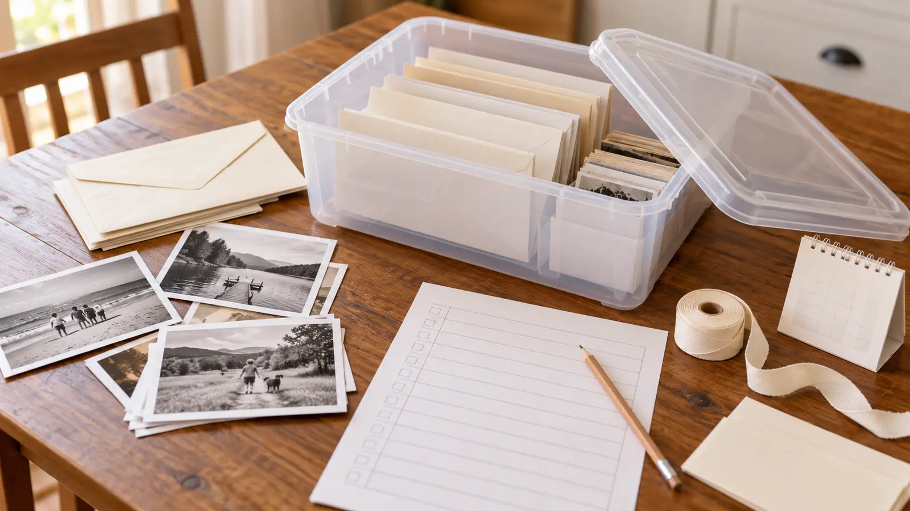

One copied image
Use a duplicate print or plain-paper copy, not the only photograph. Handle any original by clean dry edges and return it to proper storage.
AT HOME · NO-SPEND · EXPLORATION
A useful time capsule is not a box of future water damage. Copy the memory, name what it is, choose a reopening date and store it somewhere boring and stable.

The Library of Congress warns that outdoor and buried capsules are often damaged by water and recommends cool, relatively dry, clean, stable storage away from extreme temperature, leaks and direct light. So this plan ends on an interior shelf, not in the yard. Skip attics, sheds, garages, damp basements, radiators, vents, exterior walls with known leaks and any place vulnerable to flooding.
Use a good closed container whose material and condition you understand. The Library lists inert plastic options such as uncoated PET/PETE #1, HDPE #2 and polypropylene #5, plus compatible aluminum or stainless containers; an acid- and lignin-free card box can work where incidental water is not a concern. An ordinary owned container can hold a short family project, but do not call it archival simply because it has a lid.
Gather a clean dry lidded box or known container, six plain paper envelopes or folders, pencil, one inventory sheet and copied materials. Use clean dry hands and a clear table away from drinks and food. The Library of Congress photo-care guidance recommends handling prints carefully and avoiding damaging storage materials; the National Archives' family-record storage guidance supports cool, dry, stable conditions.
Do not tape or glue directly to photographs and documents. Keep rubber bands, pressure-sensitive notes, paper clips, food and drink away from materials worth preserving. Do not laminate a unique original for this activity. If the family does not have suitable clean folders, use copies and plain folded paper today, then keep important originals in their existing safe storage.
If a digital item matters, make a human-readable description and, when reasonable, a paper copy. Keep a separate backed-up copy outside the capsule and include basic file names/formats in the inventory. That improves the odds of understanding; it does not guarantee future access.
The Library of Congress time-capsule guidance recommends a contents list and a reason for each item. Its 2026 time-capsule research guide has deeper container, content and preservation references. These sources guide storage care; they do not certify this household project.
When the date arrives, photograph the closed box and its outside label if wanted, then open it on a clean dry table. Read the inventory first. Give each contributor the option to keep, discard, replace or withhold their own item before anyone posts an image or quotation. A childhood note does not become public property because years passed.
Compare predictions kindly. Wrong guesses are evidence of change, not a reason to embarrass someone. If a person is absent, deceased or estranged, the adult should slow down and decide whether the session is emotionally appropriate. No family member is owed performance for a camera.
Five minutes: each person writes one current favorite and one question on plain paper. Date it, place the pages in one envelope and store it inside a known drawer for one year. No printer: describe the image or object in words. No suitable container: make only the inventory and set a future build date; do not improvise with a damp or food-soiled box.
Bad weather changes nothing; this is an indoor plan. For a quieter memory activity without long storage, use the no-posting oral-history guide. The photo scavenger hunt provides another consent-first use of copies, and the claim-check lesson helps label what a copied artifact actually proves.
Skip when the only available items are irreplaceable originals, the storage location is damp or unstable, someone feels pressured to disclose a private memory, or the adult cannot keep the location and opening promise. Skip burial unless a qualified conservator and property rules are involved; this family activity is deliberately not designed for underground storage. Grief, family conflict or uncertain ownership can make an apparently cheerful box complicated—use a simple individual letter or no activity at all.
Reviewed October 21, 2026 by Mr Adventure Dad Editorial Desk using Library of Congress time-capsule, paper and photograph care guidance and National Archives family-record storage guidance linked above. The six-item limit, consent script, timing and adult storage card are our family adaptation. They are not conservation certification, legal advice or a guarantee of preservation. No affiliate links or sponsored products are attached. Send sourced corrections through About without private family material.
MAKE THE WEEK COUNT
Build the plan your family can finish well, then leave enough energy for the next part of the day.
More family plans